Choose one option and write silently. We’ll hear from a couple of people afterward.
Option A
Think of a place you’ve lived whose everyday vocabulary — weather, food, directions, local slang — an outsider wouldn’t fully get. What would you lose if you moved away from it?
Option B
What do you know already about Micronesia? Think about its islands, peoples, languages, history, or anyone you know with connections there.
Where did you learn it (school, family, media, travel)?
What would you like to find out after reading Bender’s chapter?
Reminders
Writing Assignment 1 Draft is due this Friday, October 9 at 11:59pm
Office Hours: Wednesdays/Fridays 1:30-2:30pm in Moore Hall 574 or on Zoom
If you can’t make that time, email me to set up a different time.
Today’s Plan
Introduction & geography of Micronesia
Countries & Territories of Micronesia
Relocate or Raise the Land?
Looking ahead to next week
Just How Big Is Micronesia?
Bender’s own way of putting it:
Fly from Los Angeles to Hawai’i, then keep going the same distance again in the same direction — you’d land in Majuro, Marshall Islands, just past the International Date Line
Crossing Micronesia east to west, from Majuro to Palau, is roughly the distance from New York to California — about 3,000 miles
And most of what’s in between is, as Bender puts it, barely specks on a map — this region’s name literally means “small islands”
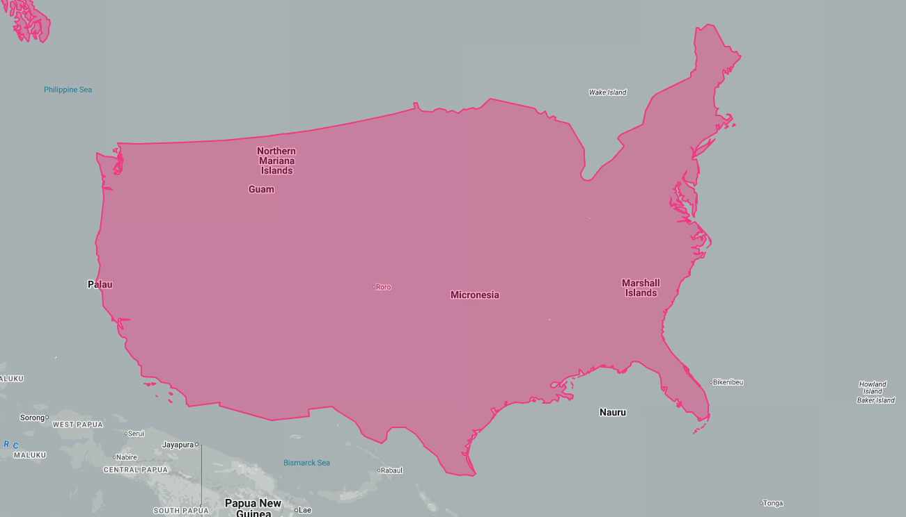
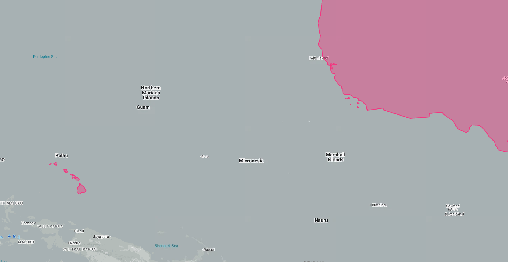
What Is a “Culture Area”?
Micronesia, Melanesia, and Polynesia — the three areas we’ve been using all semester — aren’t geographic or political categories.
They’re defined by indigenous peoples and their ways of living, including their languages — not by neat boundaries on a map
We’ll see this complicate things today: Chamorro and Palauan aren’t even Oceanic languages, and two Polynesian languages (Kapingamarangi, Nukuoro) are spoken deep inside Micronesia
Keep an eye out for how often “which culture area is this?” and “which language family is this?” give different answers
Living on a Life Raft
Almost 2 in 5 Micronesians live on coral atolls — a sliver of land, often under a mile wide, a few feet above sea level at most. That environment leaves a mark on the language.
Atoll languages are unusually rich in vocabulary for:
Navigation, stars, and wayfinding
Fishing methods, canoe parts and sailing
Coconut, breadfruit, and pandanus cultivation
High-island languages are richer instead in:
Names for flora and fauna
Topographical features (ridges, valleys, streams)
When atoll families resettle on high islands — Mortlock Islanders on Pohnpei, Satawal Islanders on Saipan — their children often stop acquiring that specialized atoll vocabulary within a generation or two.
Discuss: If you grew up on a high island and moved to an atoll (or vice versa), what vocabulary do you think would be hardest to pick up?
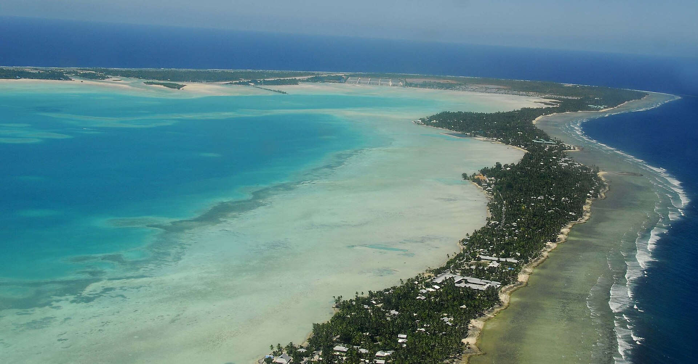
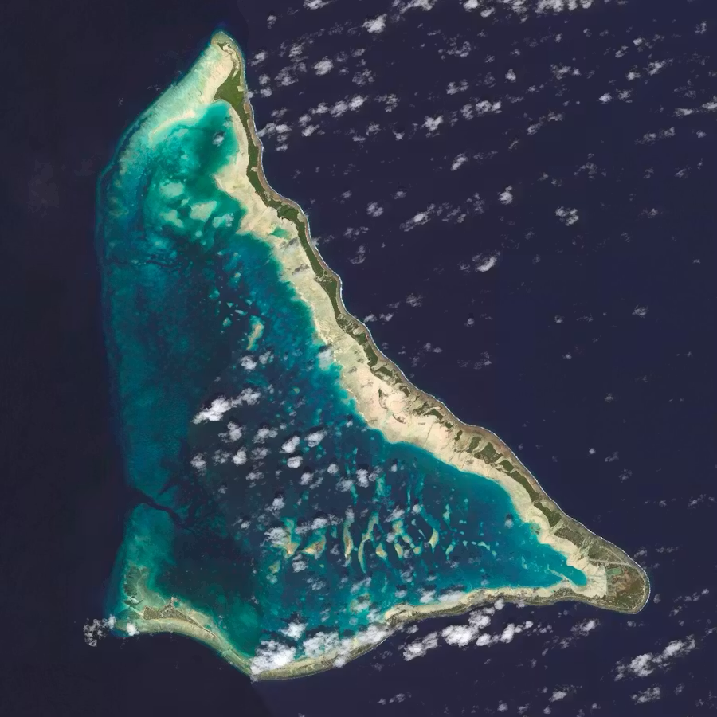
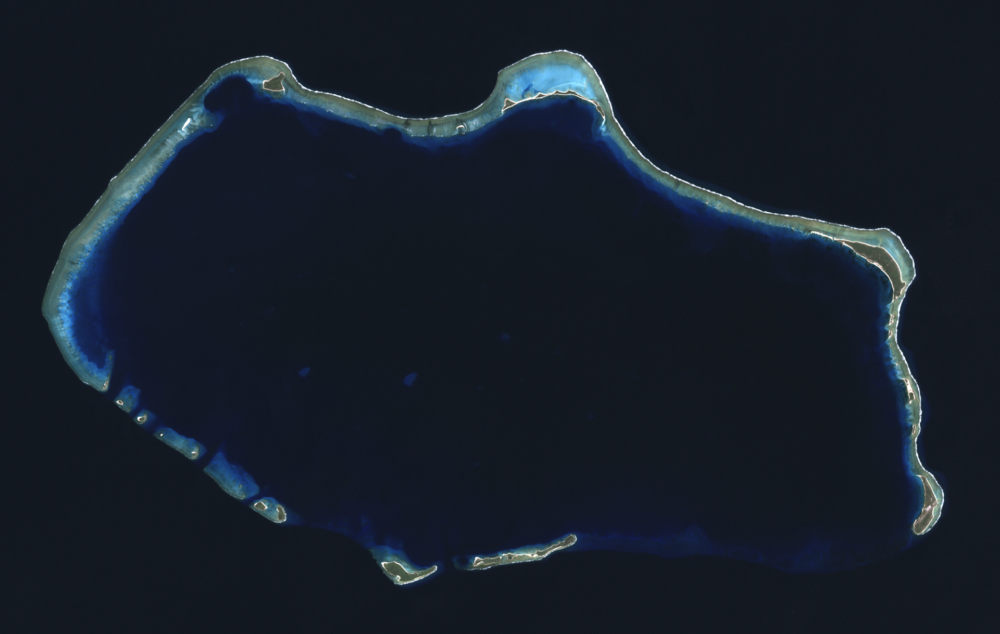
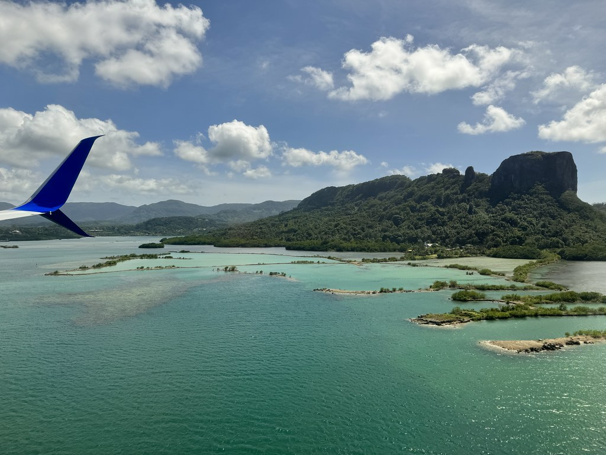
Quick Activity: Sort the Languages
From Bender’s chapter, you’ve met these eight languages:
In pairs, 3 minutes: sort them into three groups, and be ready to explain your reasoning.
Not Oceanic at all
Oceanic, but not Nuclear Micronesian
Nuclear Micronesian
Sort the Languages: Answers
Not Oceanic
Chamorro
Palauan
First wave out of Taiwan, with the Philippines and Indonesia
Oceanic, not Nuclear Micronesian
Yapese
An early, separate branch of Oceanic
Nuclear Micronesian
Marshallese
Pohnpeian
Kosraean
Nauruan
Kiribati
One shared ancestor, Proto-Micronesian
Countries & Territories of Micronesia
Guam & the Northern Mariana Islands 🇬🇺 🇲🇵
Chamorro — not part of the Oceanic subgroup we’ve been discussing
Settled from the Philippines around 1500 BC — one of the longest open-ocean voyages (1,300 mi.) in the entire Austronesian expansion, until Polynesians later crossed even farther
Belongs to the first wave of Austronesian migration out of Taiwan, the same wave that settled the Philippines and Indonesia — a completely separate branch from the Oceanic languages of Melanesia/Polynesia we’ve covered so far
On Saipan (NMI) today, many residents instead speak Carolinian — descended from more recent Chuukic-area settlers, and bilingual with their Chamorro neighbors
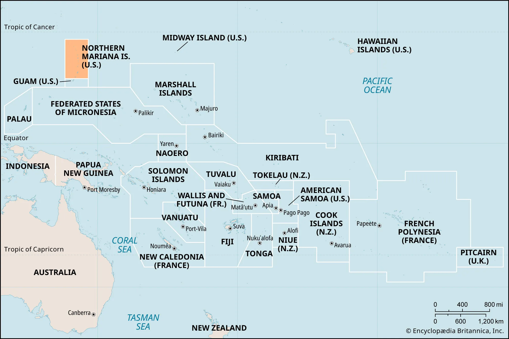
Chamorro: Two Ways to Count
Chamorro has two number systems side by side:
Native Chamorro
Spanish-derived
1
håcha
uno
2
hugua
dos
3
tulu
tres
4
fatfat
kuåtro
5
lima
sinko
The native numbers are Austronesian to the core — compare hugua ‘two’ and lima ‘five’ with Malay dua, lima and Hawaiian lua, lima
The Spanish set is typically used for money, time, and ages
The Spanish layer: Spain colonized the Marianas from the 1600s until 1898, and left a heavy imprint on Chamorro vocabulary — days of the week, much of the Catholic vocabulary, and everyday words. Si Yu’os ma’åse’ (“thank you”) literally means “God have mercy.”
Discuss: Why might a language keep both a native and a borrowed set of numbers, and use them for different jobs?
Palau 🇵🇼
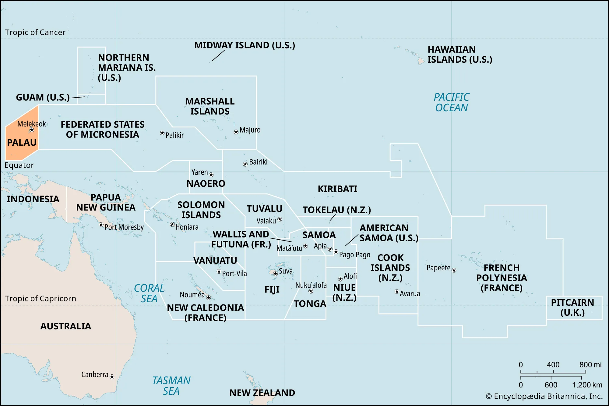
Palau 🇵🇼
Palauan — also outside the Oceanic subgroup, like Chamorro, but its migration route is much less certain than Chamorro’s
Six remote outer atolls of Palau (Sonsorol, Pulo Anna, Merir, Tobi) speak a totally different, unrelated language: Sonsorol-Tobi, actually part of the Chuukic group tied to Yap State — a reminder that national borders and language families don’t line up
Historical link to Yap: Yapese stone money (“rai”) was literally quarried in Palau, and Yapese has a number of Palauan loanwords from that contact
Yapese stone money (rai)
Palauan: The Japanese Layer
Just as Spanish left its mark on Chamorro, Japanese left its mark on Palauan.
Japan administered Palau from 1914 to 1944 and introduced Japanese-language schooling right away
Hundreds of Japanese loanwords entered everyday Palauan (one study counts 850+), and many are still in use today, though fewer than a generation ago
Japanese rule also brought surnames into common use — civil records like birth certificates, marriage licenses, and inheritance required them
Fun fact: the state of Angaur’s constitution has recognized Japanese as an official language, alongside Palauan and English
Palauan
Meaning
Japanese
sensei
teacher
sensei
bento
food eaten away from home
bentō
dengki
electricity
denki
dengua
telephone
denwa
simbung
newspaper
shinbun
skoki
airplane
hikōki
sidosia
car, automobile
jidōsha
iakiu
baseball
yakyū
Discuss: Chamorro has a Spanish layer, Palauan has a Japanese layer. What does this tell us about how a colonial language’s imprint depends on who ruled, for how long, and through what institutions (schools, government, church)?
The Federated States of Micronesia is four states, each with its own language — and those four languages fall into two very different linguistic categories.
Yapese stands alone — an early, separate branch of Oceanic (~1400 BC), not part of the “Nuclear Micronesian” group the other three belong to.
Chuukese, Pohnpeian, and Kosraean are all Nuclear Micronesian — descended from one shared ancestor, Proto-Micronesian, that spread out from the eastern end of Micronesia.
Yap
Yapese stands alone among the FSM’s languages — possibly linked to the Admiralty Islands, not part of “Nuclear Micronesian” at all.
The high island of Yap has historically provided famine relief to its surrounding atolls (Ulithi, Woleai, etc.) during typhoons — a tribute relationship sometimes called the Yap Empire
Those outer-atoll languages (Ulithian, Woleaian, Satawalese, and others) are actually part of the Chuukic continuum — more on that next
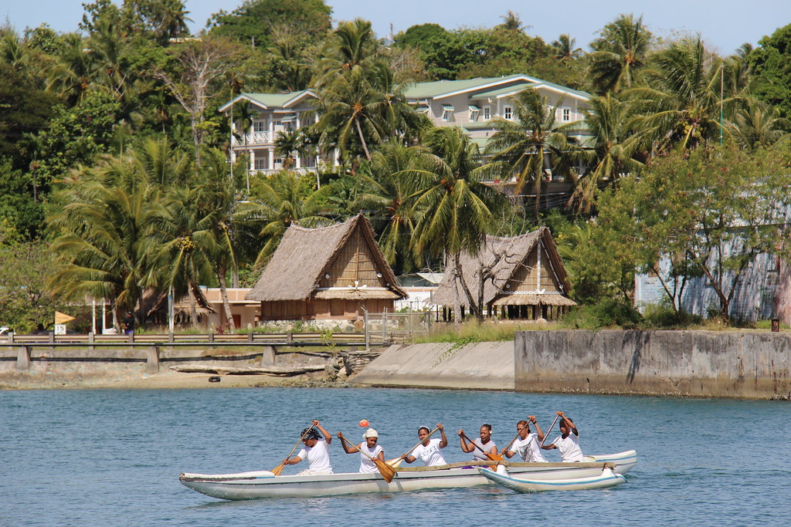
Chuuk
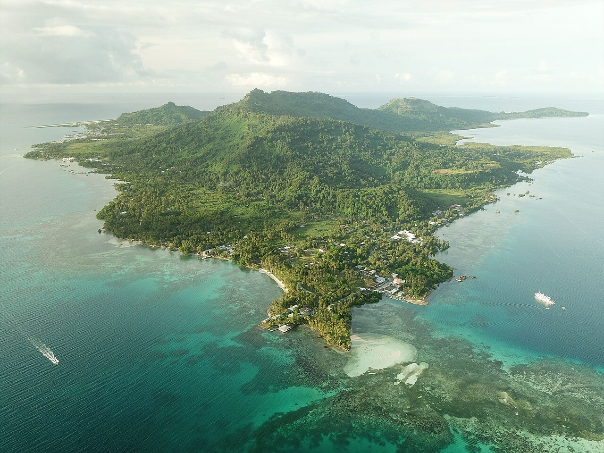
Chuuk
A great real-world test of the “language limit” idea from Week 5 (Cook, cognates): roughly 70% shared basic vocabulary is the rough cutoff between “dialect” and “different language.”
Cognate percentages across six related Chuukic varieties (Bender 1971):
Son.
Uli.
Wol.
Sat.
Pul.
Ulithi
68.8
Woleai
59.4
74.1
Satawal
57.5
65.5
77.1
Puluwat
58.0
63.6
67.5
79.9
Chuuk
55.4
56.6
57.7
64.4
75.4
Neighboring pairs hover right around that 70% line — classic dialect continuum. Pairs farther apart on the chain drop well below it.
Discuss: Given these numbers, is it more accurate to say Chuukic is “six languages” or “one language with six dialects”? Does the question even have a clean answer?
Pohnpei
Pohnpeian is part of the Pohnpeic branch of Nuclear Micronesian, with its own satellite atoll languages (Mokilese, Pingilapese, Ngatikese)
Two unrelated Polynesian Outlier languages — Kapingamarangi and Nukuoro — are also spoken in Pohnpei State, despite being geographically deep in Micronesia. Their speakers arrived via Tuvalu around 1000 AD
Nan Madol — the massive stone ruins on Pohnpei — may be linked to the rise of an early, breadfruit-fueled Micronesian society
Nan Madol ruins, Pohnpei
Discuss: Kapingamarangi and Nukuoro are Polynesian languages spoken in Micronesia. What does that tell us about the difference between a geographic region and a linguistic one?
Kosrae
Kosraean may be the closest thing to a “homeland” for all of Nuclear Micronesian — genetic-tree evidence (Ross 1996) points to Kosrae as the likely point of origin
It’s the only high island among the four easternmost points of Micronesia (with Nauru, northern Kiribati, and the southern Marshalls) — more land, fresh water, and room for sustained settlement than an atoll offers
Lelu, Kosrae’s own set of stone ruins, parallels Nan Madol on Pohnpei
Marshall Islands 🇲🇭
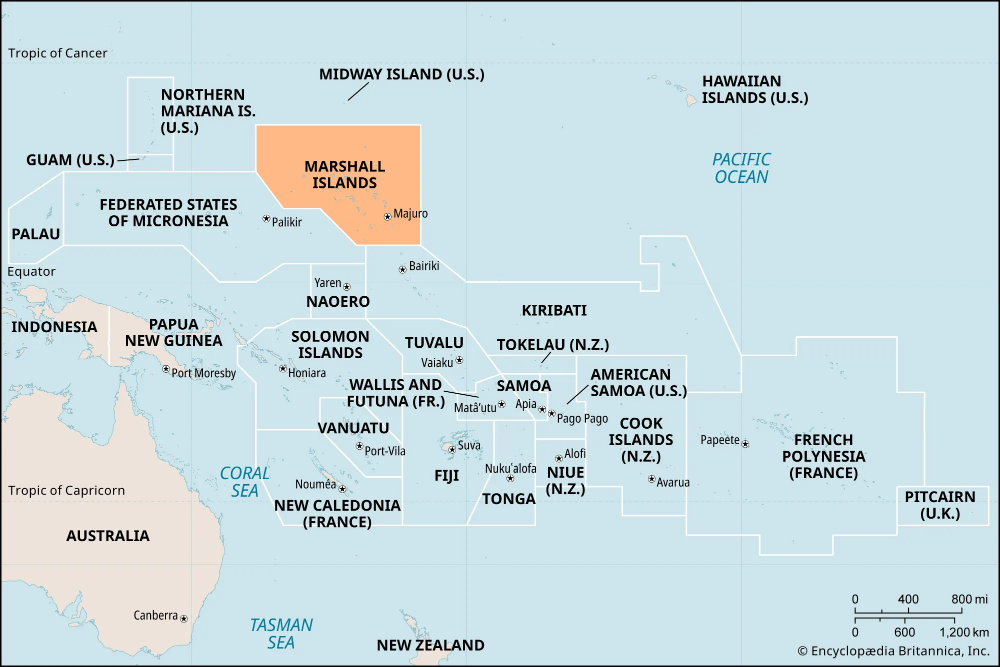
Marshall Islands 🇲🇭
Bender uses Marshallese as the chapter’s showcase for Nuclear Micronesian grammar — a few standout features:
Two words for “we”, depending on whether the listener is included or not (inclusive vs. exclusive)
An elaborate demonstrative system layered on person (“close to me” vs. “close to you” vs. “close to someone else”) and human/nonhuman distinctions
Directional suffixes that fuse onto verbs for compass directions, sea vs. land, even “toward the lagoon” vs. “toward the ocean side”
A Marshallese language commissioner, writing to Bender about the capital Majuro, describes watching Marshallese (Kajin Ṃajeḷ, “KM”) lose ground to English (Kajin Pālle, “KP”) in real time: code-mixed parliamentary debates, kids raised in English when one parent isn’t Marshallese, phone numbers given in English even by people who know the Marshallese words, DVDs flooding households with English.
Discuss: The commissioner calls this “the beginning of the demise of KM.” Compare this to what we discussed last class about Bislama and Vanuatu’s indigenous languages — same mechanism, different island group?
Nauru (Naoero) 🇳🇷
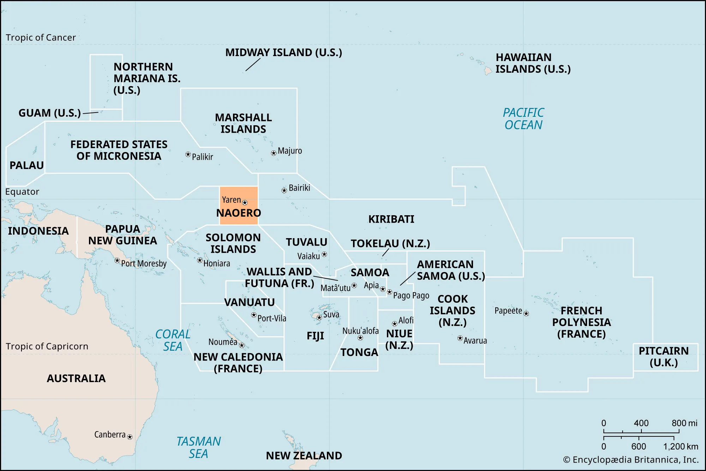
Nauru (Naoero) 🇳🇷
The world’s smallest independent nation — just 8 sq. mi.
Nauruan is Nuclear Micronesian, but highly distinct from its nearest relatives — had it been included in the 2003 Proto-Micronesian reconstruction study, it likely would have formed its own top-level branch, just like Kosraean, Marshallese, and Kiribati each do
Together, Nauru, Kosrae, the southern Marshalls, and northern Kiribati form a roughly 500-mile “quadrilateral” that’s the best candidate for where Nuclear Micronesian first took root
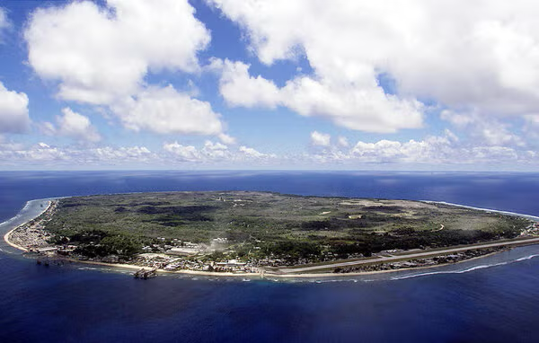
Kiribati 🇰🇮
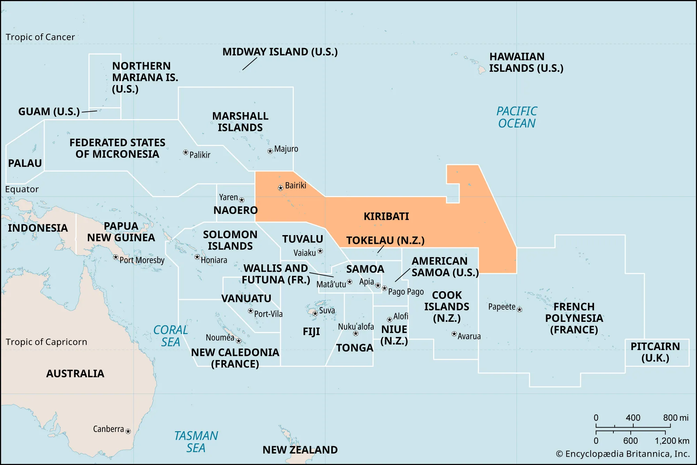
Kiribati 🇰🇮
Likely the first landfall of the Nuclear Micronesian migration out of the southeast Solomons — a 1,100-mile voyage, around 3,000 years ago
Entirely atolls — no point in the country rises more than 33 ft. above sea level
A live, current existential threat: when Bender wrote this chapter, Kiribati had purchased land in Fiji and President Anote Tong was framing eventual relocation as “migration with dignity.”
Kiribati’s current president, Taneti Maamau (reelected 2024), has taken the opposite approach: rather than planning to relocate, his government is pursuing large-scale land reclamation and dredging — physically raising and expanding the islands, backed by Chinese aid — to stay in place
Either way — relocating or raising the land — much of the atoll-specific vocabulary (navigation, fishing, canoe parts, star names) is tied to a way of life that’s already under pressure
Discuss: Two very different responses to the same threat — leave, or raise the land. What might each one mean for the long-term survival of the language?
Activity: Relocate or Raise the Land? (12 min)
Form groups of 4. Each group is assigned a side (split the room in half):
Team Relocate
Kiribati should plan for “migration with dignity” — resettle its people abroad over time.
Team Raise the Land
Kiribati should stay: dredge, reclaim, and raise the islands.
Your job (6 min): make the best case for your side using language and culture survival as your main criterion. Draw on today’s slides:
Atoll vocabulary tied to a way of life (Living on a Life Raft)
Marshallese in Majuro vs. Springdale, Arkansas
Carolinian on Saipan; Mortlock Islanders on Pohnpei
Then (6 min): pair with a group from the other side. Each side gets 90 seconds, then you try to find one point of agreement.
Modern-Day Pressures
Across all of Micronesia, the same underlying forces are reshaping language use, regardless of which specific islands or languages are involved:
Rapid urbanization — Majuro, Koror, Weno, Kolonia — pulls people off outer islands and atolls into crowded town centers
A cash economy replaces subsistence fishing/farming, and with it, the specialized vocabulary tied to those practices
English spreads through schooling, media, and intermarriage, often becoming the de facto home language for the next generation
The US military presence at Kwajalein (Marshall Islands) is its own distinct pressure — a missile testing range that has reshaped Marshallese land use and labor for decades
The Compact of Free Association (COFA)
The FSM, the Marshall Islands, and Palau are independent nations, but each has a Compact of Free Association with the US — not colonies, but closely bound by treaty.
Citizens of all three can live, work, and study in the US without a visa — this is why Micronesian communities exist across the US mainland and Hawai’i
COFA funding was renewed in 2024: $7.1 billion over 20 years ($3.3B to FSM, $2.3B to RMI, $889M to Palau). Separately, Medicaid eligibility for COFA citizens living in the US was restored by Congress in December 2020, after being cut off by the 1996 welfare reform law
This free-movement relationship is a major driver of the diaspora communities we’re about to look at
The Marshallese Diaspora: Springdale, Arkansas
Springdale is now home to an estimated 12,000-15,000 Marshallese residents — the largest Marshallese community outside the Marshall Islands themselves
Drawn originally by poultry-industry jobs, enabled by COFA’s visa-free travel
The community has built real institutional infrastructure: more than 30 Marshallese churches, a Marshallese-language radio station, and an RMI consulate — the only one in the continental US
An open question for a diaspora this size: does that infrastructure make it easier to maintain Kajin Ṃajeḷ across generations than it’s been in Majuro itself, where English pressure is also intense?
Discuss: Compare Springdale to the Chamorro/Carolinian bilingualism on Saipan, or to the KM/KP situation in Majuro. Does moving away from the homeland always mean faster language loss — or could it sometimes mean the opposite?
Closer to Home: Micronesians in Hawai’i
Hawai’i is home to a large COFA migrant community — and the discrimination against it is well documented.
A 2019 U.S. Commission on Civil Rights report found Micronesian migrants face substantial barriers to housing, employment, healthcare, and education in Hawai’i — including landlords who refuse to rent to them and employers who won’t hire them
Health coverage: the 1996 federal welfare reform law cut COFA migrants off from Medicaid. Around 2010 Hawai’i moved them to a more limited state-funded plan, and in 2014 the Ninth Circuit (Korab v. Fink) held the state wasn’t required to make up the lost federal funding. Congress only restored Medicaid eligibility in December 2020
COVID-19: Pacific Islanders (a category that includes Micronesians) were about 5% of Hawai’i’s population but about 22% of cases from March 2020 to February 2021 — an infection rate roughly 4.8 times the state average (7,070 vs. 1,477 per 100,000)
UH Mānoa’s own Thompson School of Social Work has studied discrimination directly, documenting Micronesians being stereotyped in local public discourse as “dirty,” “uneducated,” or a drain on the healthcare and welfare systems — stereotypes not supported by the data on actual service use
Discuss: We’ve spent today’s class treating Micronesian languages and peoples as subjects of academic study. What’s it like to realize this community’s everyday experience, here in the state where many of us live, includes this level of bias?
Exit Ticket (4 min)
Write silently; we’ll collect these on the way out.
If your family or community had to relocate entirely to a new country, what part of your language or culture do you think would survive the move, and what might not?
![]()